| 选择器 | 选择器权重 |
|---|---|
| 继承 或者 * | 0,0,0,0 |
| 元素选择器 | 0,0,0,1 |
| 类选择器，伪类选择器 | 0,0,1,0 |
| ID选择器 | 0,1,0,0 |
| 行内样式.style="" | 1,0,0,0 |
| !important 重要的 | 无穷大 |
<style>
/* 复合选择器会有权重叠加的问题 */
/* ul li 权重 0,0,0,0,1 + 0,0,0,0,1 = 0,0,0,2 */
ul li {
color: green;
}
/* li 的权重是 0,0,0,0,1 */
li {
color: red;
}
</style>
<style>
/* .nav li 权重是 11 */
.nav li {
color: red;
}
/* 需求把第一个小li 颜色改为 粉色加粗 ? */
/* 权重是 10 */
.pink {
color: pink;
font-weight: 700;
}
</style>
08-盒子模型导读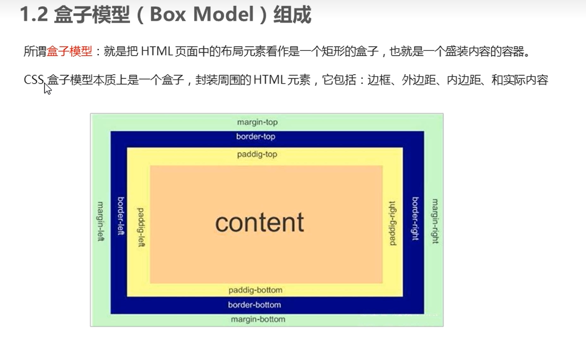
11-盒子模型边框border| 属性 | 作用 |
|---|---|
| border-width | 定义边框粗细，单位是px |
| -style | 边框的样式 |
| -color | 边框颜色 |
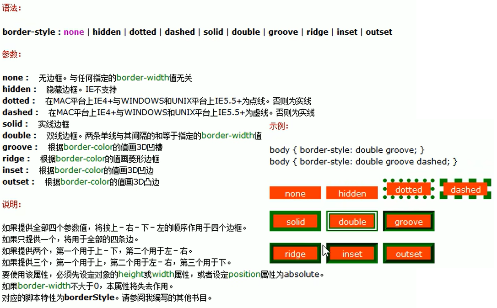
12-边框的复合写法| 选择器 | 选择器权重 | 选择器权重 |
|---|---|---|
| 继承 或者 * | 0,0,0,0 | 0,0,0,0 |
| 元素选择器 | 0,0,0,1 | 0,0,0,1 |
| 类选择器，伪类选择器 | 0,0,1,0 | 0,0,1,0 |
| ID选择器 | 0,1,0,0 | 0,1,0,0 |
| 行内样式.style="" | 1,0,0,0 | 1,0,0,0 |
| !important 重要的 | 无穷大 | 无穷大 |
| 值的个数 | 表达意思 |
|-------------------------|-----------------------------------------------|
| padding: 5px; | 1个值，代表上下左右都有5像素内边距； |
| padding: 5px 10px; | 2个值，代表上下内边距是5像素 左右内边距是10像素；|
| padding: 5px 10px 20px; | 3个值，代表上内边距5像素 左右内边距10像素 下内边距20像素；|
| padding: 5px 10px 20px 30px; | 4个值，上是5像素 右10像素 下20像素 左是30像素 顺时针 |
| 值的个数 | 表达意思 |
|---|---|
| padding: 5px; | 1个值，代表上下左右都有5像素内边距； |
| padding: 5px 10px; | 2个值，代表上下内边距是5像素 左右内边距是10像素； |
| padding: 5px 10px 20px; | 3个值，代表上内边距5像素 左右内边距10像素 下内边距20像素； |
| padding: 5px 10px 20px 30px; | 4个值，上是5像素 右10像素 下20像素 左是30像素 顺时针 |
.header{ width:960px; margin:0 auto; }
清楚网页元素的内外边距，下面的代码也是我们在网页css化的第一行代码
* {
padding:0; /* 清除内边距 */
margin:0; /* 清除外边距 */
}
网页元素很多都带有默认的内外边距，而且不同浏览器默认的也不一致。因此我们在布局前，首先要清除下网页元素的内外边距。
css 设置
body {
background-color: #f5f5f5;
}
* {
margin: 0;
padding: 0;
}
.div_29_33 {
width: 298px;
height: 415px;
background-color: white;
/* 水平居中上课内边距100px */
margin: 100px auto;
}
.div_29_33 img {
/* 这样设置之后img的宽度就和父盒子一样宽 */
width: 100%;
}
.review {
text-align: center;
height: 70px;
/* line-height: 70px; */
/* 因为没有设置width 所有设置padding的左右28px不会撑开盒子 */
padding: 0 28px;
/* 因为设置了height 所以不能设置padding-top 否则会撑开盒子 */
margin-top: 30px;
}
.appraise {
font-size: 12px;
color: #b0b0b0;
margin-top: 20px;
padding: 0 28px;
}
.info {
font-size: 14px;
margin-top: 15px;
padding: 0 28px;
}
.info h4 {
设置行内块
display: inline-block;
font-weight: 400;
}
.info span {
color: #ff8500;
}
.info em {
去除样式
font-style: normal;
color: #ebe4e0;
margin: 0 5px 0 5px;
}
.info a {
color: #333;
去除下划线
text-decoration: none;
}
<div class="div_29_33">
<a href="#"><img src="css_第二天_三大属性/png1.png" /></a>
<p class="review">这是一个一条测试数据，用来显示内容用，内容长度需要超过盒子已实现自动换行</p>
<div class="appraise">来自于 xxxxx 的评价</div>
<div class="info">
<h4><a href="#">Readmi AirDots 真无线蓝...</a></h4>
<em>|</em>
<span><a href="#">99.9元</a></span>
</div>
</div>
实例效果如下:
34-pink老师解惑
.border_radius {
width: 100px;
height: 60px;
background-color: #666;
设置矩形的圆角
border-radius: 20px;
}
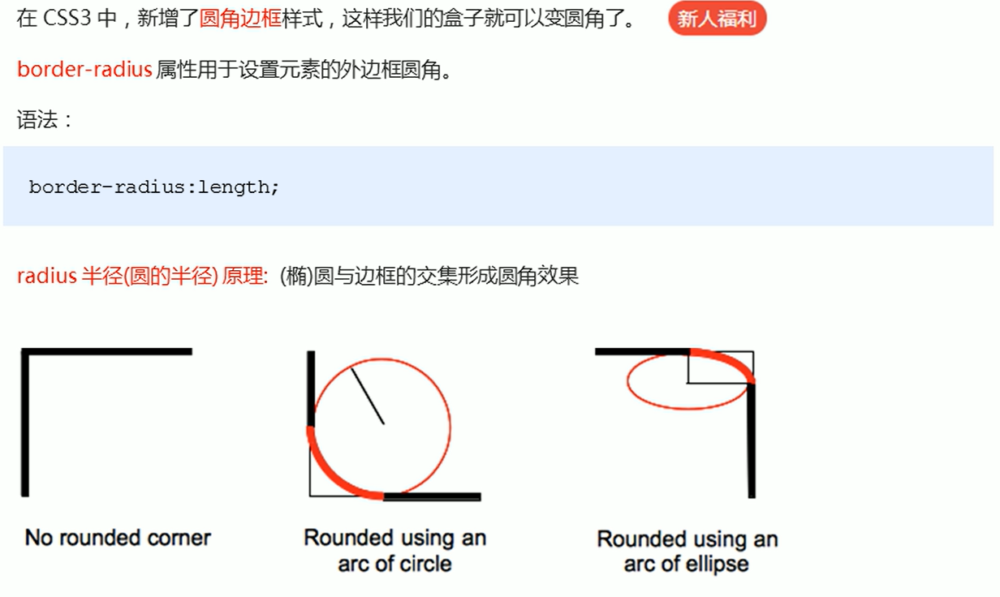
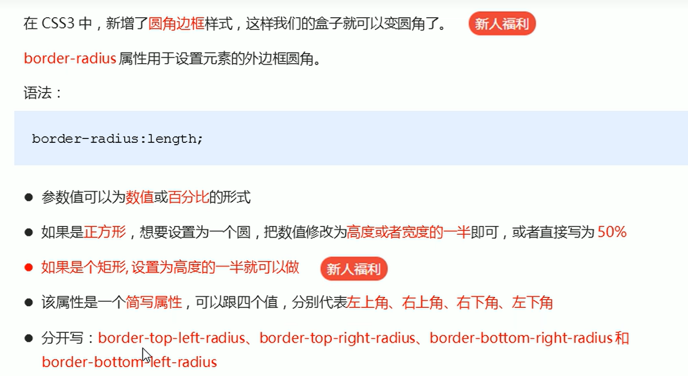
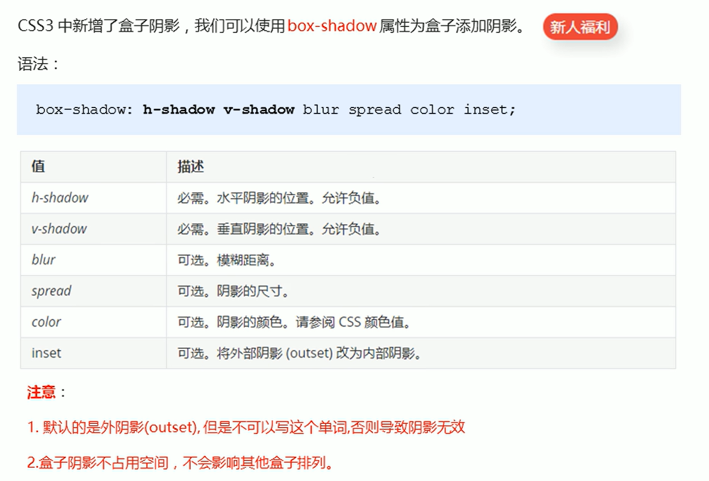
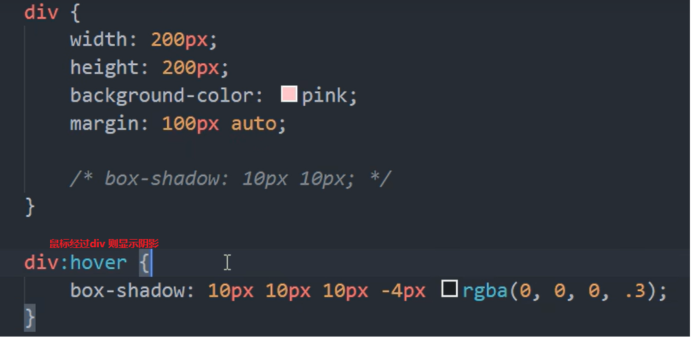
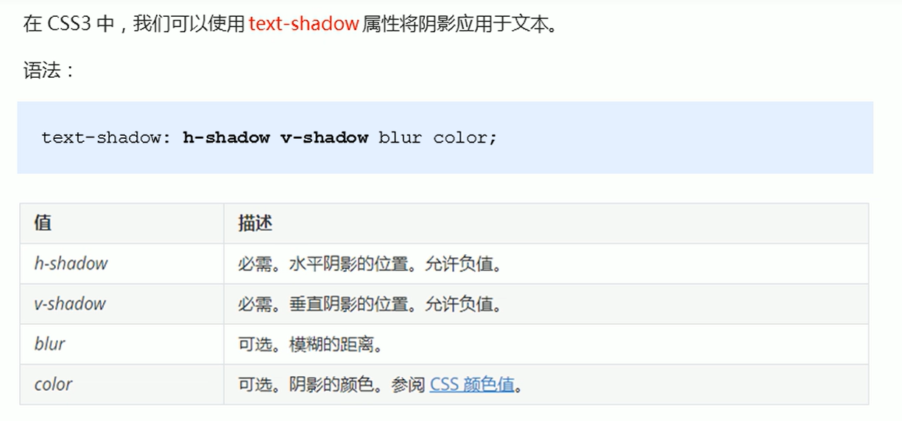
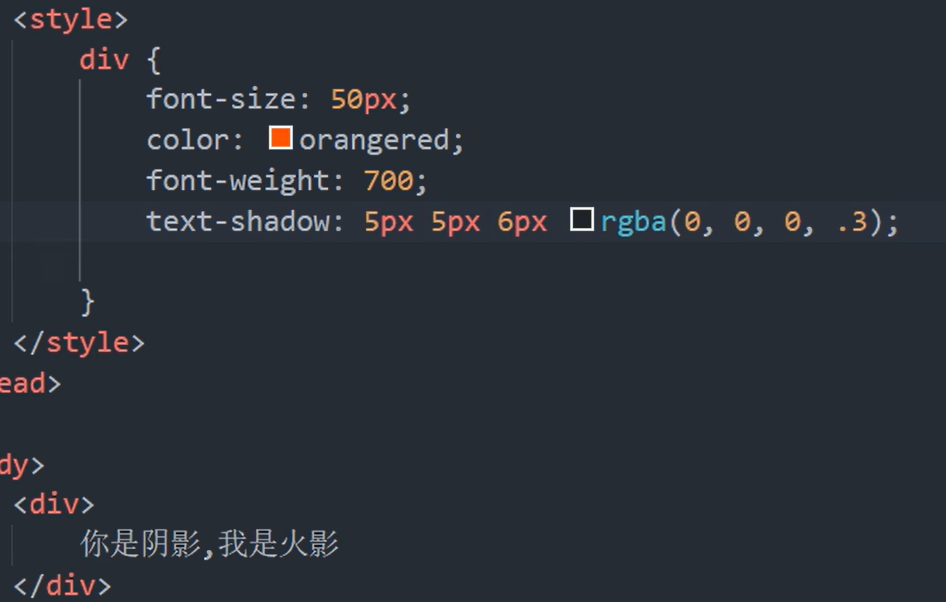
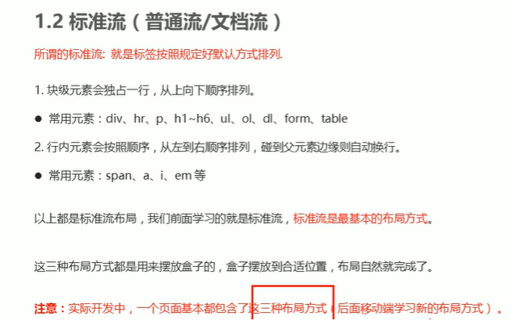
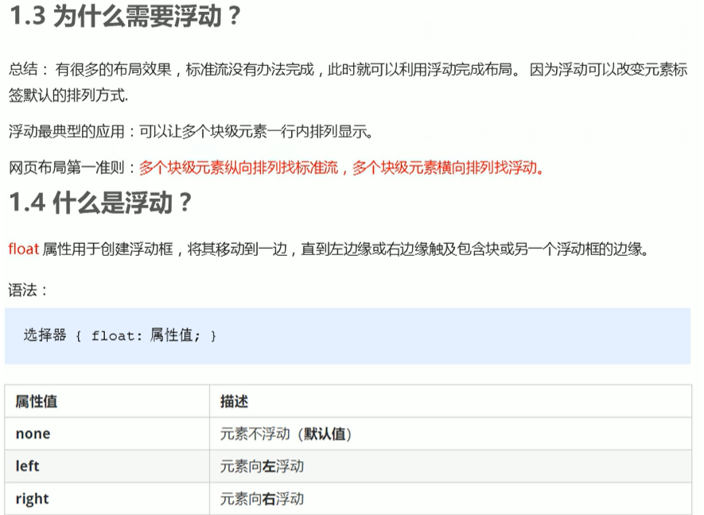
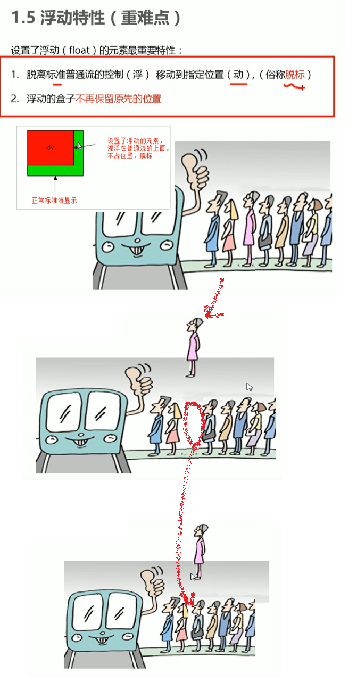